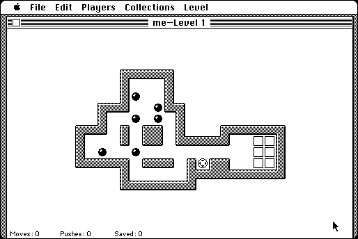

Download
Sokoban2.4.2a.zip (168K) Sokoban 2.4.2a repackaged into a zipped hfs disk image and checksum file. The disk image can be mounted with Mini vMac.
sokoban2.4.2a.hqx (221K) Sokoban 2.4.2a in the original format.
copyright: Scott C. Lindhurst
mod date: Apr 10, 1999
license: freeware
official url :
Sokoban for the Macintosh
"adaption of public domain UNIX game"

Download later version
sokoban25.zip (303K) Sokoban 2.5 repackaged into a zipped hfs disk image and checksum file. The disk image can be mounted with Mini vMac.
sokoban25.sit.hqx (385K) Sokoban 2.5 in the original format.
Version 2.5 seems to work in the Macintosh Plus emulation of Mini vMac, except there is no sound. (Versions 2.4.2a doesn't have this problem.)
If you find these downloads useful, please consider helping the Gryphel Project, which hosts them.
Here are the md5 checksums for the downloads, signed with Gryphel Key 5:
--------- GRY SIGNED TEXT --------- 5f831a7bab000bfbe7097c00ec4398b9 Sokoban2.4.2a.zip a748a43c2a788ee727cdc5ff09397fdc sokoban2.4.2a.hqx fe6363a9ca076c663ffd7bbc95938895 sokoban25.zip 6dc38cfc283f6a5cee5410cb3a9b1cea sokoban25.sit.hqx ------- BEGIN GRY SIGNATURE ------- Gry/4Xa8CFcUzxdN/Hc3/ba4CUVM6V2PIIpgmuY/r+Uv0GVinzd3ONUWAKoD7mZK uxk5Sobqm4eNByJVdkfKLNj54DUwh0jQ7aivBHgeYxqhVU8VqBaFZM34PEExpcVA WkpVmEouc4GOrYVp48maOGrEd2crq90T5aUTDsFWWYt8JrkfGImKTZqn5C8iHL2j -------- END GRY SIGNATURE --------